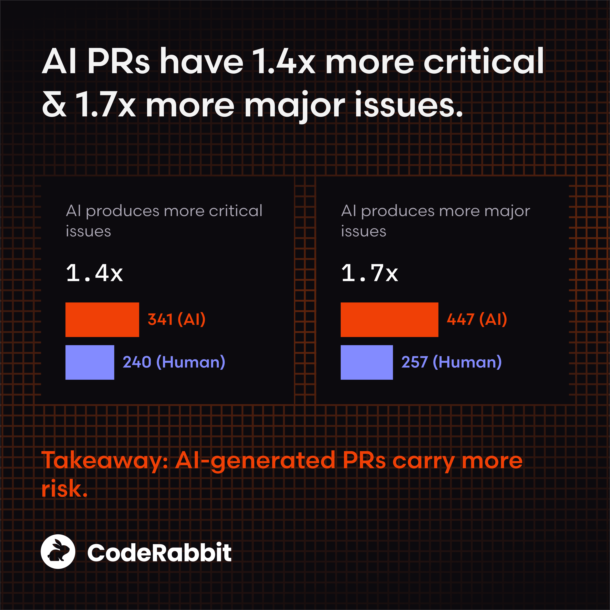
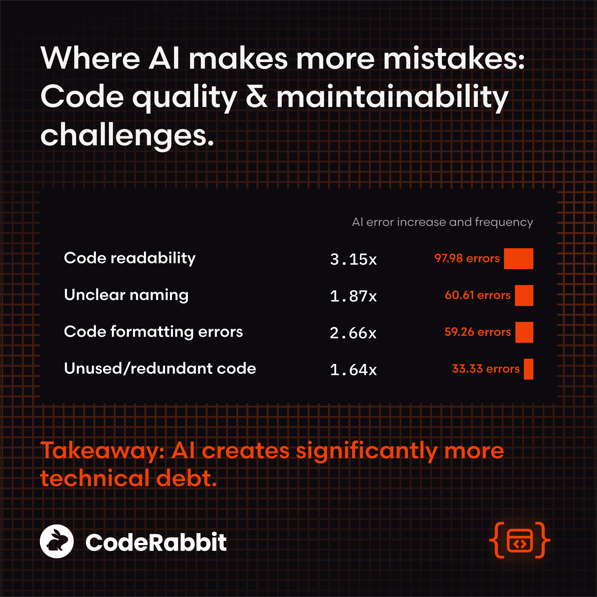
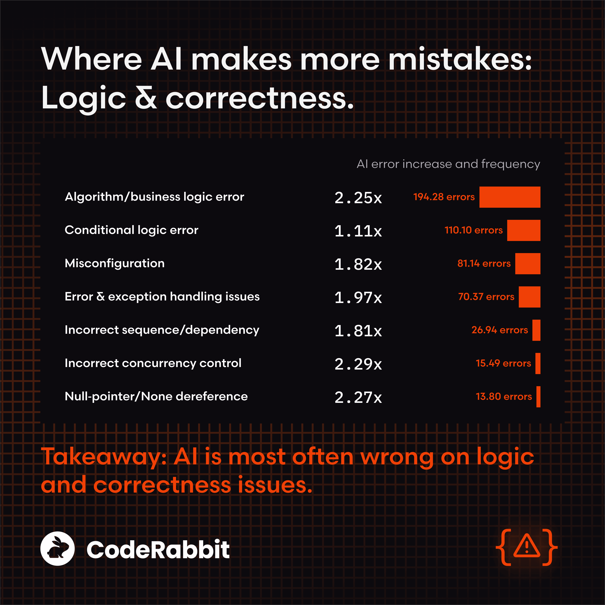
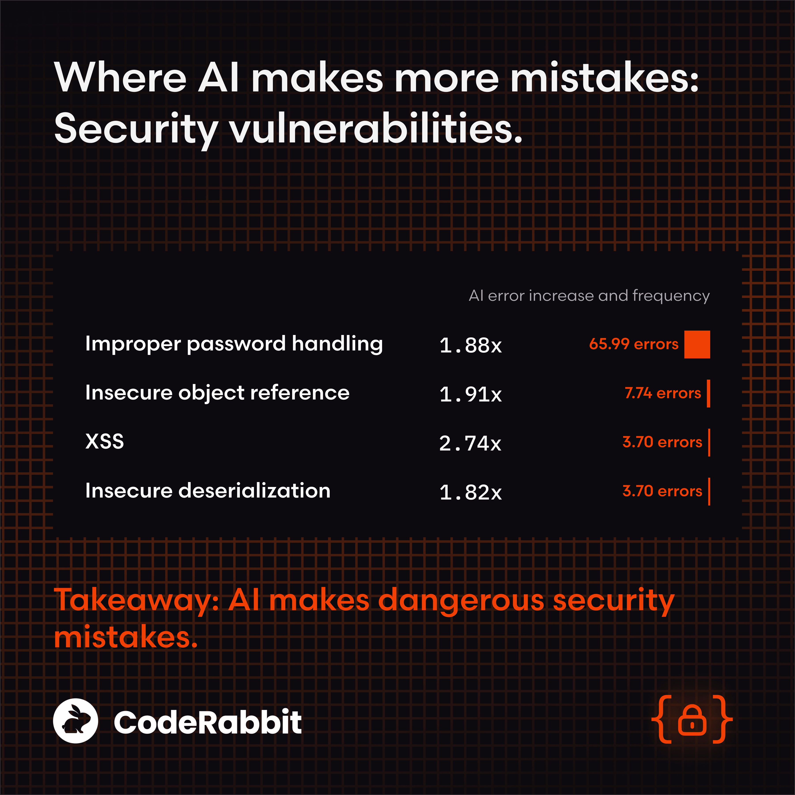
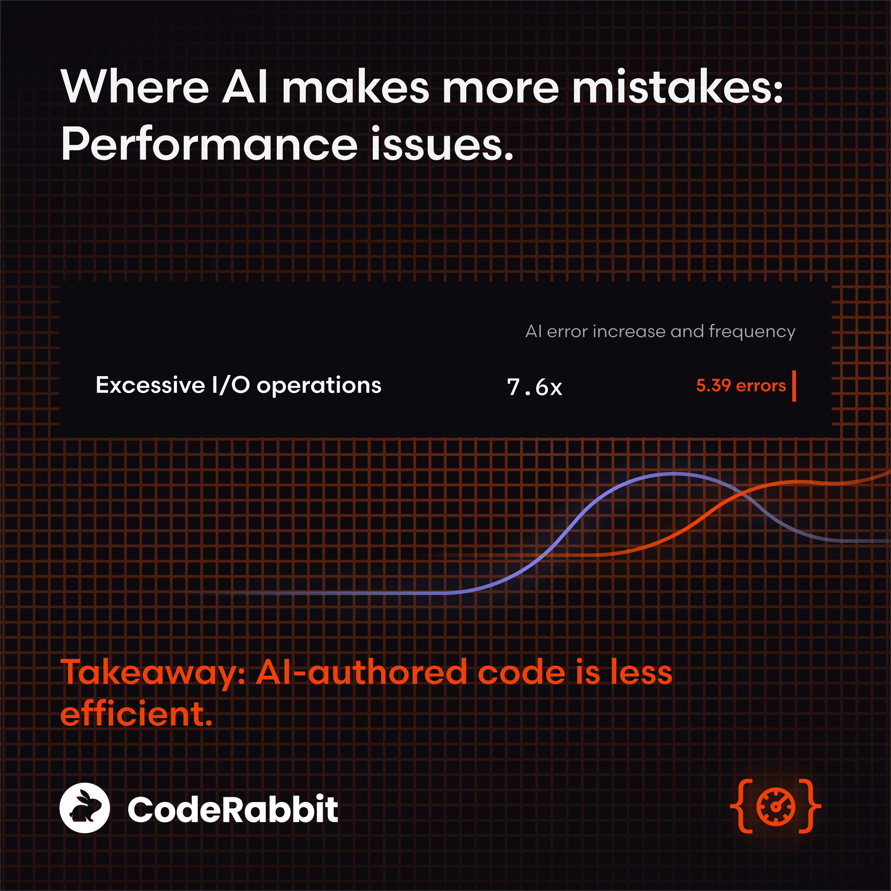

What we learned from analyzing hundreds of open-source pull requests.
Over the past year, AI coding assistants have gone from emerging tools to everyday fixtures in the development workflow. At many organizations, a part of every code change is now machine-generated or machine-assisted.
But while this has been accelerating the speed of development, questions have been quietly circulating:
Why are more defects slipping through into staging?
Why do certain logic or configuration issues keep appearing?
And are these patterns tied to AI-generated code?
It would appear like AI is playing a significant role. A recent report found that while pull requests per author increased by 20% year-over-year, thanks to help from AI, incidents per pull request increased by 23.5%.
This year also brought several high-visibility incidents, postmortems, and anecdotal stories pointing to AI-written changes as a contributing factor. These weren’t fringe cases or misuses. They involved otherwise normal pull requests that simply embedded subtle mistakes. And yet, despite rapid adoption of AI coding tools, there has been surprisingly little concrete data about how AI-authored PRs differ in quality from human-written ones.
So, CodeRabbit set out to answer that question empirically in our State of AI vs Human Code Generation Report.
Our State of AI vs Human Code Generation Report
We analyzed 470 open-source GitHub pull requests, including 320 AI-co-authored PRs and 150 human-only PRs, using CodeRabbit’s structured issue taxonomy. Every finding was normalized to issues per 100 PRs and we used statistical rate ratios to compare how often different types of problems appeared in each group.
The results? Clear, measurable, and consistent with what many developers have been feeling intuitively: AI accelerates output, but it also amplifies certain categories of mistakes.
Limitations of our study
Getting data on issues that are more prevalent in AI-authored PRs is critical for engineering teams but the challenge was determining which PRs were AI-authored vs human authored. Since it was impossible to directly confirm authorship of each PR of a large enough OSS dataset, we checked for signals that a PR was co-authored by AI and assumed that those that didn’t have it were human authored, for the purposes of the study.
This resulted in statistically significant differences in issue patterns between the two datasets, which we are sharing in this study so teams can better know what to look for. However, we cannot guarantee all the PRs we labelled as human authored were actually authored only by humans. Our full methodology is shared at the end of the report.
Top 10 findings from the report
No issue category was uniquely AI but most categories saw significantly more errors in AI-authored PRs. That means, humans and AI make the same kinds of mistakes. AI just makes many of them more often and at a larger scale.
1. AI-generated PRs contained ~1.7× more issues overall.
Across 470 PRs, AI-authored changes produced 10.83 issues per PR, compared to 6.45 for human-only PRs. Even more striking: high-issue outliers were much more common in AI PRs, creating heavy review workloads.
2. Severity escalates with AI: More critical and major issues.

AI PRs show ~1.4–1.7× more critical and major findings.
3. Logic and correctness issues were 75% more common in AI PRs.
These include business logic mistakes, incorrect dependencies, flawed control flow, and misconfigurations. Logic errors are among the most expensive to fix and most likely to cause downstream incidents.
4. Readability issues spiked more than 3× in AI contributions.

The single biggest difference across the entire dataset was in readability. AI-produced code often looks consistent but violates local patterns around naming, clarity, and structure.
5. Error handling and exception-path gaps were nearly 2× more common.

AI-generated code often omits null checks, early returns, guardrails, and comprehensive exception logic, issues tightly tied to real-world outages.
6. Security issues were up to 2.74× higher

The most prominent pattern involved improper password handling and insecure object references. While no vulnerability type was unique to AI, nearly all were amplified.
7. Performance regressions, though small in number, skewed heavily toward AI.

Excessive I/O operations were ~8× more common in AI-authored PRs. This reflects AI’s tendency to favor clarity and simple patterns over resource efficiency.
8. Concurrency and dependency correctness saw ~2× increases.
Incorrect ordering, faulty dependency flow, or misuse of concurrency primitives appeared far more frequently in AI PRs. These were small mistakes with big implication
9. Formatting problems were 2.66× more common in AI PRs.
Even teams with formatters and linters saw elevated noise: spacing, indentation, structural inconsistencies, and style drift were all more prevalent in AI-generated code.
10. AI introduced nearly 2× more naming inconsistencies.
Unclear naming, mismatched terminology, and generic identifiers appeared frequently in AI-generated changes, increasing cognitive load for reviewers.
Why these patterns appear
Why are teams seeing so many issues with AI-generated code? Here’s our analysis:
AI lacks local business logic: Models infer code patterns statistically, not semantically. Without strict constraints, they miss the rules of the system that senior engineers internalize.
AI generates surface-level correctness: It produces code that looks right but may skip control-flow protections or misuse dependency ordering.
AI doesn’t adhere perfectly to repo idioms: Naming patterns, architectural norms, and formatting conventions often drift toward generic defaults.
Security patterns degrade without explicit prompts: Unless guarded, models recreate legacy patterns or outdated practices found in older training data.
AI favors clarity over efficiency: Models often default to simple loops, repeated I/O, or unoptimized data structures.
What engineering teams can do about it
Adopting AI coding tools isn’t simply about speeding up development. It requires rethinking the guardrails that ensure all code entering production is safe, maintainable, and correct.
Based on the patterns in the data, here are the most important takeaways for teams:
1. Give AI the context it needs
AI makes more mistakes when it lacks business rules, configuration patterns, or architectural constraints. Provide prompt snippets, repo-specific instruction capsules, and configuration schemas to reduce misconfigurations and logic drift.
2. Use policy-as-code to enforce style
Readability and formatting were some of the biggest gaps. CI-enforced formatters, linters, and style guides eliminate entire categories of AI-driven issues before review.
3. Add correctness safety rails
Given the rise in logic and error-handling issues:
Require tests for non-trivial control flow
Mandate nullability/type assertions
Standardize exception-handling rules
Explicitly prompt for guardrails where needed
4. Strengthen security defaults
Mitigate elevated vulnerability rates by centralizing credential handling, blocking ad-hoc password usage, and running SAST and security linters automatically.
5. Nudge the model toward efficient patterns
Offer guidelines for batching I/O, choosing appropriate data structures, and using performance hints in prompts.
6. Adopt AI-aware PR checklists
Reviewers should explicitly ask:
Are error paths covered?
Are concurrency primitives correct?
Are configuration values validated?
Are passwords handled via the approved helper?
These questions target the areas where AI is most error-prone.
7. Get help reviewing and testing AI code
Code review pipelines weren’t created to handle the higher volume of code teams are currently shipping with the help of AI. Reviewer fatigue has been found to lead to more issues and missed bugs. An AI code review tool like CodeRabbit helps by standardizing code reviews acts as a third-party source of truth that standardizes quality across different AI tools that teams might use while reducing the time and cognitive labor needed for reviews. That allows developers to concentrate on reviewing the more complex parts of the code changes and reduce the amount of bugs and issues that end up in production.
The bottom line
AI coding tools are powerful accelerators, but acceleration without guardrails increases risk. Our analysis shows that AI-generated code is consistently more variable, more error-prone, and more likely to introduce high-severity issues without the right protections in place.
The future of AI-assisted development isn’t about replacing developers. It’s about building systems, workflows, and safety layers that amplify what AI does well while compensating for what it tends to miss.
For the teams that want the speed of AI without the surprises, the data is clear: Quality isn’t automatic. It requires deliberate engineering. Even when using AI tools.
An AI code review tool could also help. Try CodeRabbit today.